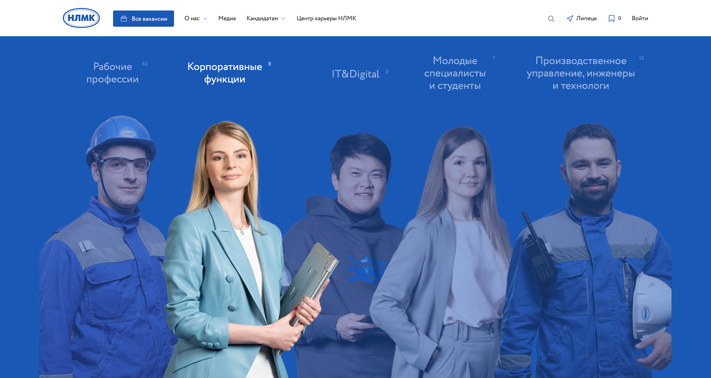
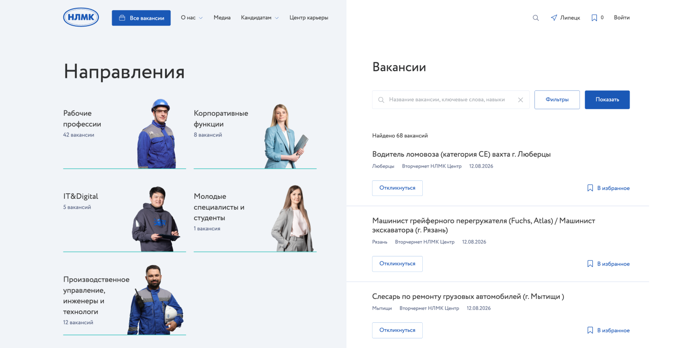
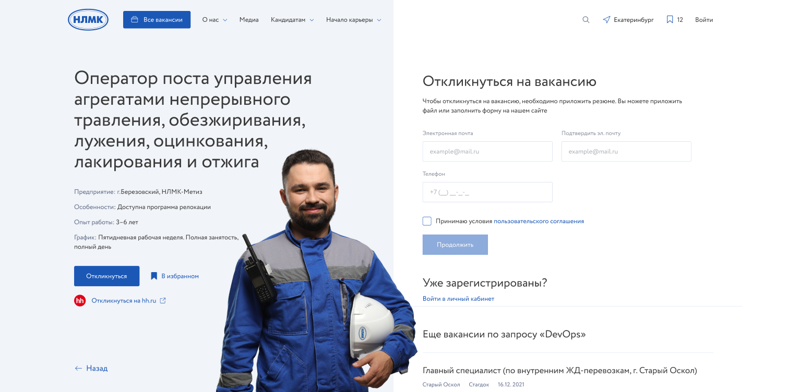
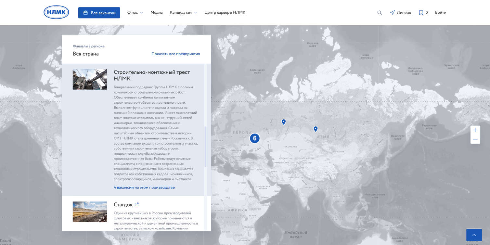

Карьера в НЛМК
Карьерный портал для соискателей, сотрудников производства, студентов и выпускников
Роль
Лид-дизайнер
Задизайнено в
JetStyle, 2021
Задача
НЛМК нужен был большой карьерный портал для разных аудиторий: специалистов, сотрудников производства, студентов и выпускников. Требовалось объединить информацию о компании, направления найма, поиск вакансий, отклики и личный кабинет в единую понятную систему.
Мы изучали другие карьерные сервисы, прорабатывали пользовательские сценарии и регулярно сверяли решения с командой заказчика. Изначально портал должен был интегрироваться с SAP, но после ухода системы из России мы адаптировали сценарии и функциональность под реализацию на Битриксе.
Что я делал
Я был лид-дизайнером проекта и задавал общее направление работы команды из четырёх дизайнеров. Разработал визуальную концепцию и стиль портала, сформировал его структуру, проектировал ключевые страницы и сценарии, включая поиск вакансий, отклик и личный кабинет.
Я участвовал в обсуждениях с заказчиком, презентовал решения, собирал обратную связь и следил за тем, чтобы макеты разных дизайнеров складывались в цельный и последовательный продукт. Над командой также работал арт-директор, но основную дизайн-работу внутри проекта координировал я.



